Biblioteca a tres
Libros, cine y videojuegos en una sola biblioteca. Sin cuenta, sin servidor, y lo que escribes no sale de tu dispositivo.
quirekeep.pages.devGratis · sin anuncios · nada que desbloquear
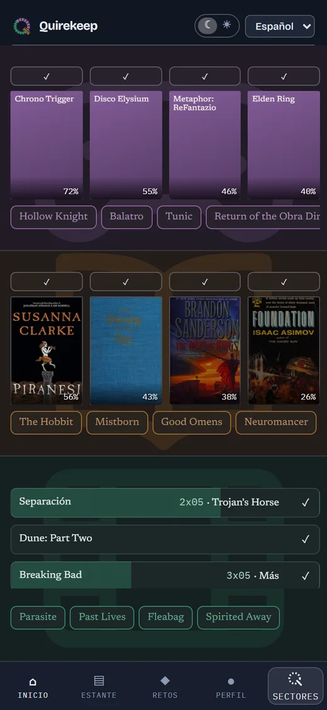
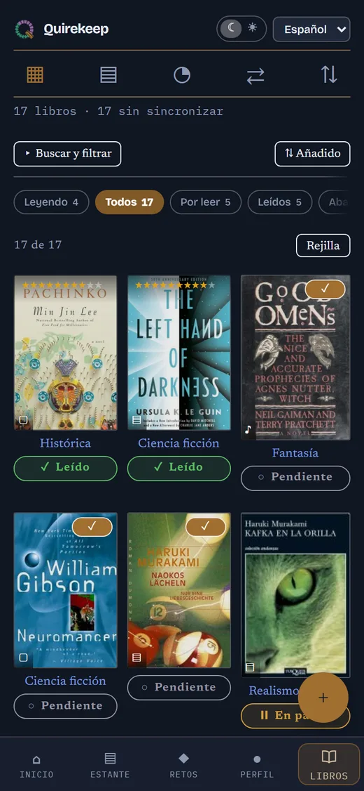
Dos temas. Digital, oscuro, y Papel, claro: no es uno invertido, cambian las tipografías, las esquinas y las sombras. Se cambia arriba, con ☾ y ☀, y esta página cambia con él.
Tres sectores
Dos temas
Una biblioteca
Cada sector funciona igual y guarda lo suyo por separado: sus estantes, sus ajustes y sus estadísticas.
No hace falta usar los tres. Apaga en Perfil los que no quieras y la app se queda solo con los que dejaste encendidos.
Libros
Búsqueda por título o ISBN, portadas, elección de edición y progreso en páginas, minutos o por ciento.
Cine
Temporadas y episodios con su fecha de emisión, y el reparto con el personaje que hace cada quien.
Videojuegos
Horas jugadas, estado y ficha con estudio, dirección, año y plataformas.
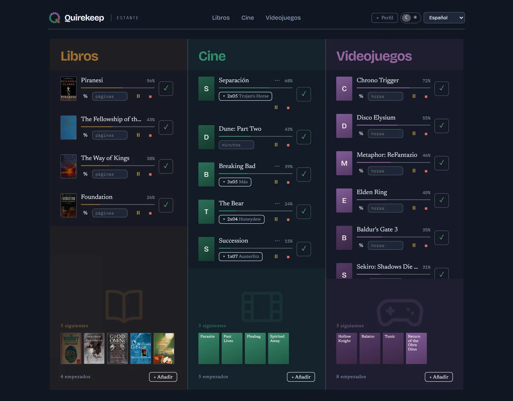
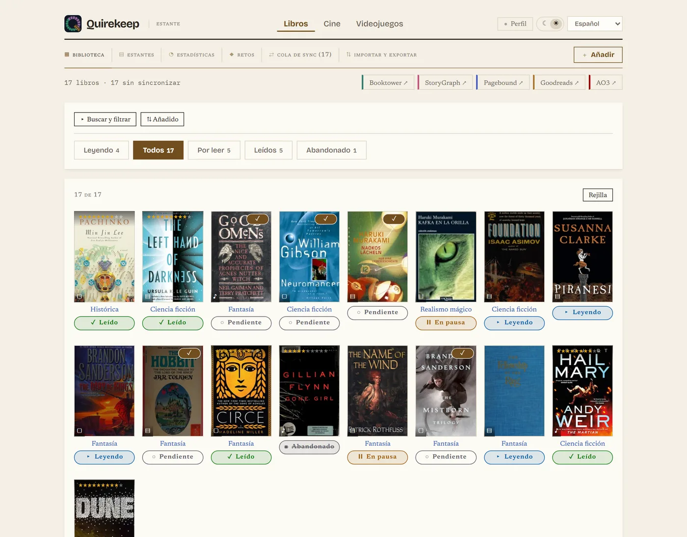
Las mismas seis pantallas en cada sector
Las aprendes una vez y te sirven para los tres. La ficha de un título se rellena sola al buscarlo, y en una serie trae las temporadas con sus episodios y el siguiente por ver.

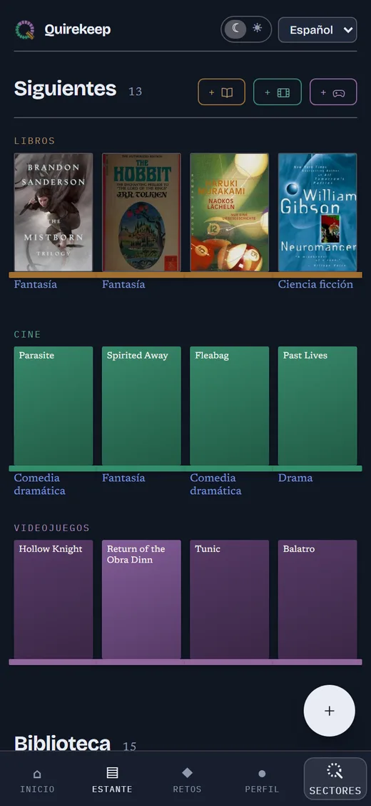
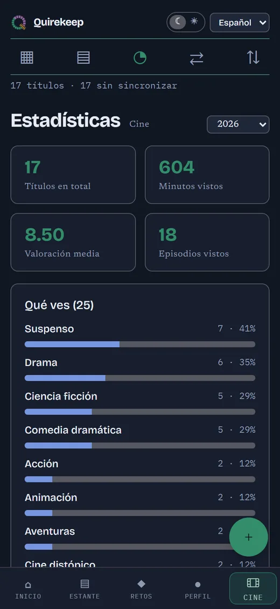
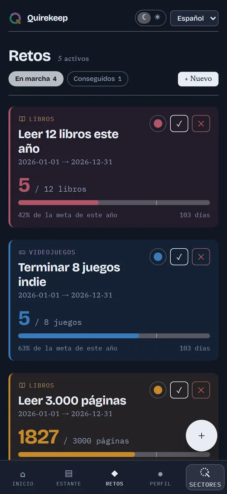
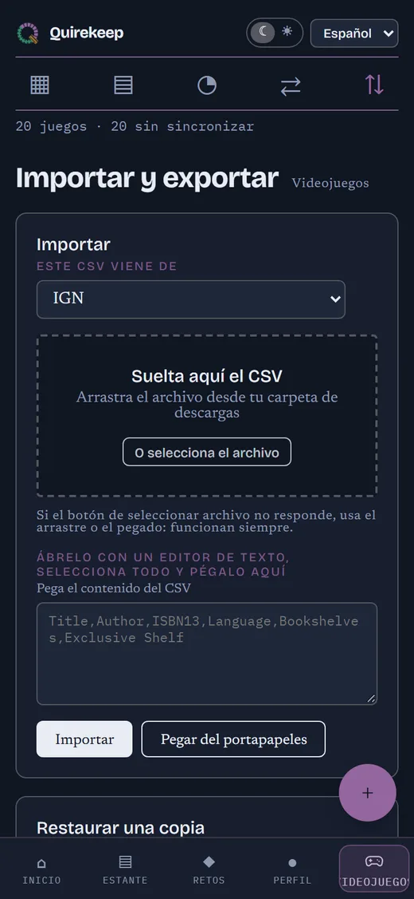
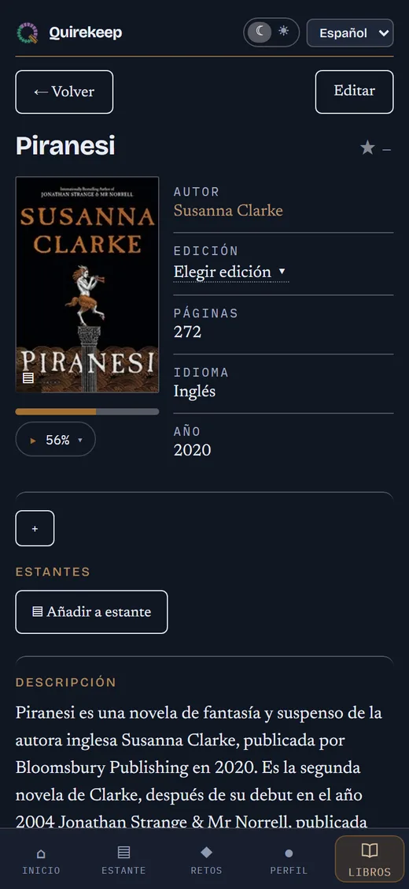
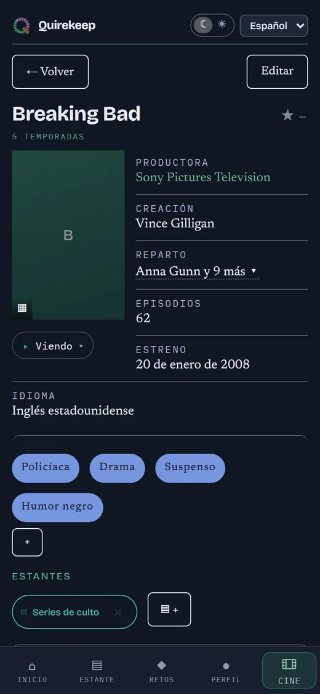
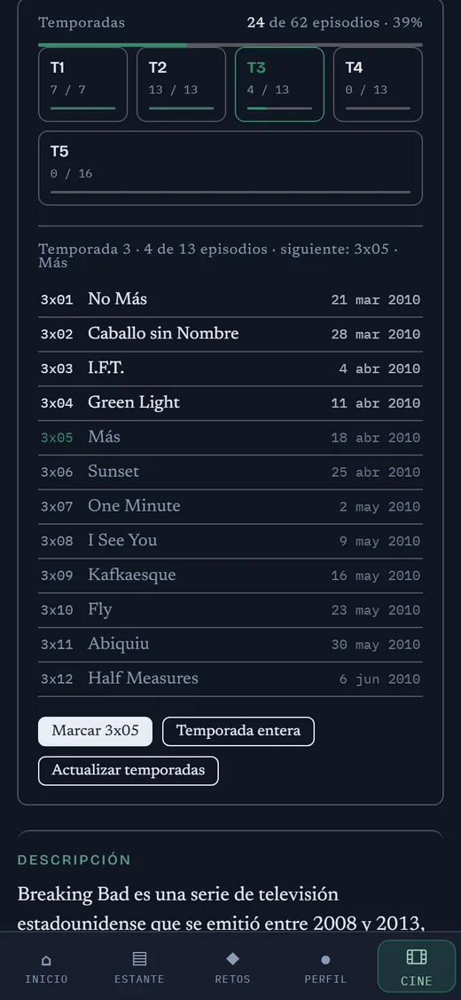
Apaga lo que no uses.
Las cuentas, donde están.
No hace falta usar los tres sectores. En Perfil apagas los que no quieras y la app se queda solo con los que dejaste encendidos: sin pestañas vacías y sin restos. Se vuelven a encender cuando quieras, con lo suyo intacto.
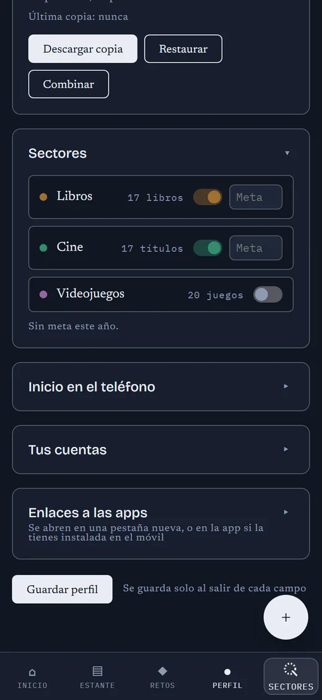
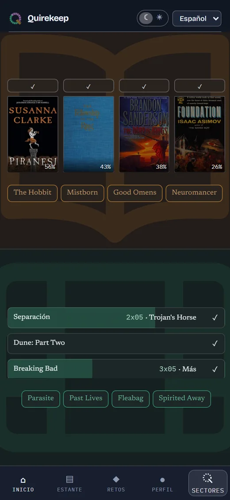
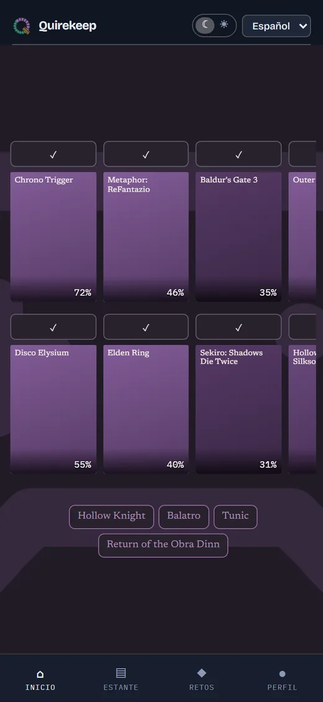
Las cuentas de siempre
Quirekeep no se conecta a ninguna. Guarda cuáles tienen ya cada título, para que sepas qué te queda por subir, y la cola de sincronización te lo deja listo para copiar.
- Booktower
- StoryGraph
- Pagebound
- Goodreads
- Letterboxd
- Trakt
- IGN
- Backloggd
- Steam
La importación lee los CSV de Goodreads, StoryGraph, Pagebound y Letterboxd, y el JSON de Trakt.
Se guarda en tu dispositivo
y no sale de ahí
Todo vive en el almacenamiento de tu navegador, en ese aparato y en ningún otro sitio. Sin cuenta, sin servidor, nada se envía.
No está en la App Store ni en Google Play. Abres una dirección y le dices al navegador que se la quede.
Android
En Chrome, abre el menú de los tres puntos y elige Instalar aplicación.
iPhone y iPad
En Safari, no en otro navegador. Toca el botón de compartir y elige Añadir a pantalla de inicio.
Windows y Mac
En Chrome o Edge, pulsa el icono de instalar al final de la barra de direcciones.
Tu biblioteca empieza vacía
Añade lo que estés leyendo ahora mismo y mira si te compensa.